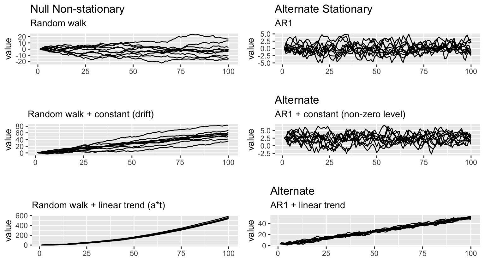

Set 4 ARIMA
4.1 Stationarity
The ARMA model we have seen assumes stationary data. Stationarity means ‘not changing in time’ in the context of time-series models. In a typical data analysis, however, we will not be assured that our data is stationary. Therefore, we need some methods to evaluate stationarity and also to deal with nonstationary data.
We will discuss 2 common approaches to evaluating stationarity:
- Visual test
- Unit Root Test (ADF)
4.1.1 Visual Test
The visual test is simply looking at a plot of the data versus time. Look for:
- Change in the level over time. Is the time series increasing or decreasing? Does it appear to cycle?
- Change in the variance over time. Do deviations away from the mean change over time, increase or decrease?
4.1.2 Unit Root Tests
One of the most common forms of non-stationarity that is tested for is that the process has a random walk component, such as \(x_t = x_{t-1} + e_t\). A random walk is called a ‘unit root’ process in the time series literature since it occurs when one of the roots of the AR polynomial is 1. A test for an underlying random walk is called a ‘unit root’ test.
4.1.3 Dickey Fuller (DF)
The DF tests for a unit root in the context of an AR(1) model, which can be written,
\[\begin{align} x_t &= \phi_1 x_{t-1} + w_t \\ \nabla x_t &= (1-\phi_1) x_{t-1} + w_t \\ &= \delta x_{t-1} + w_t \end{align}\]
This model can be estimated, and testing for a unit root is equivalent to testing:
\[\begin{align} H_0&: \delta = 0 \\ H_A&: \delta \neq 0 \end{align}\]
The test statistic has a specific distribution simply known as the Dickey–Fuller table, which is used to find the p-value. We want to reject the null hypothesis of non-stationarity.
4.1.4 Augmented DF
The Augmented Dickey-Fuller test looks for evidence that an AR(p) process has a unit root (an underlying random walk process).
The null hypothesis is that the time series has a unit root, that is, it has a random walk component.
The alternative hypothesis is some variation of stationarity.
The first difference, \(\nabla\), of the general AR(p) model can be re-written as,
\[\begin{align} \nabla x_t = \phi_1^\prime x_{t-1} + \sum_{i=1}^{p-1} \phi_{i+1}^\prime \nabla x_{t-1} + w_t, \end{align}\]
where
\[\begin{align} \phi_1^\prime &= \sum_{i=1}^{p-1} \phi_{i+1}^\prime \nabla x_{t-1} \\ \phi_j^\prime &= \sum_{j=1}^{p} \phi_{j}~\text{ for} j \geq 2 \end{align}\]
Our interest is on \(\phi_1^\prime\) since it is equal to 0 exactly when 1 is a root of the AR(p) polynomial. Therefore, the hypothesis test is,
\[\begin{align} H_0&: \phi_1^\prime = 0 \\ H_A&: \phi_1^\prime \neq 0 \end{align}\]
##
## Attaching package: 'reshape2'## The following object is masked from 'package:tidyr':
##
## smiths
4.2 ADF test using tseries::adf.test()
adf.test() in the tseries package will apply the Augmented Dickey-Fuller with a constant and trend and report the p-value. We want to reject the Dickey=Fuller null hypothesis of non-stationarity. We will set k=0 to apply the Dickey-Fuller test which tests for AR(1) stationarity. The Augmented Dickey-Fuller tests for more general lag-p stationarity.
adf.test(x, alternative = c("stationary", "explosive"),
k = trunc((length(x)-1)^(1/3)))4.3 ARIMA Models
Our data is not always stationary. If the data do not appear stationary, differencing can help. This leads to the class of autoregressive integrated moving average (ARIMA) models. ARIMA models are indexed with orders (p,d,q) where d indicates the order of differencing.
\(\{x_t\}\) follows an ARIMA(p,d,q) process if \((1-\mathbf{B})^d x_t\) is an ARMA(p,q) process.
For example, if we look at Japan exports over the time period from 1960 to 2016, we see a clear evolution in the mean of the time series, indicating that the time series is not stationary.
As we saw in week one, if we instead look at the year over year changes in exports, we see something that more closely resembles a stationary time series.

4.3.1 Model Selection/ Fitting
The general sequence of steps involved in fitting an ARIMA model to a given time series are:
- Evaluate whether the time series is stationary
- If not, make it stationary - select the differencing level (d)
- Select the AR level (p) and the MA level (q) that optimize the AIC
Steps two and three are automated with the function forecast::auto.arima function. For instance,
## Series: je$Exports
## ARIMA(0,1,0)
##
## sigma^2 = 1.628: log likelihood = -93.1
## AIC=188.21 AICc=188.28 BIC=190.24
##
## Training set error measures:
## ME RMSE MAE MPE MAPE MASE
## Training set 0.0948585 1.264655 0.883942 0.2186117 7.269751 0.9826653
## ACF1
## Training set -0.043171394.3.2 Model Checking
4.3.2.1 Check the residuals
Residuals = difference between the observations (data), \(y\), and expected (fitted) values, \(\hat{y}\). Thus, the i’th residual is: \(y_i-\hat{y}_i\).
In R, we can obtain the vector of residuals using the residuals function, as shown below.
4.3.2.2 residuals() function in R
The residuals() function will return the residuals for fitted models.
## Time Series:
## Start = 1
## End = 57
## Frequency = 1
## [1] 0.01072294 -1.44501952 0.15303390 -0.39309669 0.45625211 1.02356255
## [7] 0.06053730 -0.92437932 0.45807416 0.44426518 -0.19594755 0.86880508
## [13] -1.08192227 -0.52480724 3.41625812 -0.76990990 0.72818035 -0.44252813
## [19] -1.89419993 0.42955074 2.03742971 0.99396401 -0.20034080 -0.62338421
## [25] 1.09590411 -0.50007152 -2.98081554 -0.97493052 -0.36290393 0.53728879
## [31] 0.10797014 -0.43368768 -0.09399316 -0.61422391 -0.07420507 -0.03185334
## [37] 0.50727239 1.06978245 -0.02437143 -0.57272023 0.67272500 -0.39538586
## [43] 0.78912188 0.62107244 1.33273884 1.04040881 1.86046117 1.62041428
## [49] -0.06927885 -4.90312357 2.51584283 -0.11176077 -0.38024365 1.37064557
## [55] 1.62490343 0.04862657 -1.46977556To check the fit of our model, we want to check that the residuals are white noise.
4.3.3 Forecasting
4.3.3.1 Point Estimates
The basic idea of forecasting with an ARIMA model is to estimate the parameters and forecast forward.
For example, let’s say we want to forecast with a ARIMA(2,1,0) model with drift: \[z_t = \mu + \beta_1 z_{t-1} + \beta_2 z_{t-2} + e_t\] where \(z_t = x_t - x_{t-1}\), the first difference.
Arima() would write this model:
\[(z_t-m) = \beta_1 (z_{t-1}-m) + \beta_2 (z_{t-2}-m) + e_t\] The relationship between \(\mu\) and \(m\) is \(\mu = m(1 - \beta_1 - \beta_2)\).
Let’s estimate the \(\beta\)’s for this model from Japan export.
## ar1 ar2 drift
## -0.05580519 -0.18850080 0.10736838## drift
## 0.1335991So we can forecast with this model:
\[z_t = 0.1335991 -0.05580519 z_{t-1} - 0.18850080 z_{t-2} + e_t\] To obtain the \(T+1\) forecast value:
zt_1 = 16.119153 - 17.588928
zt_2 = 17.588928 - 17.540302
16.119153 + (0.1335991 - 0.05580519 * zt_1 - 0.18850080 * zt_2)## [1] 16.325614.3.3.2 Standard Errors
To obtain the standard errors of the model forecast, it is helpful to reformulate the ARIMA model as an infinite order MA model. Any ARIMA model can be written as an infinite order MA model:
\[\begin{align} x_t - \mu &= w_t + \psi_1 w_{t-1} + \psi_2 w_{t-1} + \ldots + \psi_k w_{t-k} + \ldots \\ &= \sum_{j=0}^\infty \psi_j w_{t-j} \text{ where } \psi_0=1 \end{align}\]
For example, the AR(1) model:
\[\begin{align} y_t &= \phi y_{t-1} + w_t \\ &= \phi ( \phi y_{t-1} + w_{t-1} ) + w_t \\ &= \phi^2 y_{t-1} + \phi w_{t-1} + w_t \\ &= \sum_{j=0}^{\infty} \phi^j w_{t-j} \end{align}\]
The standard deviation of the forecast error at time \(T+h\) is,
\[\begin{align} \sqrt{ \hat{\sigma}^2_w \sum_{j=0}^{h-1} \psi_j^2 } \end{align}\]
With the assumption of normally distributed errors, a 95% prediction interval for \(x_{T+h}\) is,
\[\begin{align} \hat{x}_{T+h} \pm 1.96 \sqrt{ \hat{\sigma}^2_w \sum_{j=0}^{h-1} \psi_j^2 } \end{align}\]
For example, the one step ahead forecast for the Japan Export model has a 95% prediction interval:
## [1] 13.81181 18.83941You can also use the forecast function to obtain point estimates and prediction intervals. For example,

4.5 Lab 3
- Consider
fpp3::aus_airpassengers, the total number of passengers (in millions) from Australian air carriers for the period 1970-2011.
- Use
forecast::auto.arima()to find an appropriate ARIMA model. What model was selected? Write the model in terms of the backshift operator. - Check that the residuals look like white noise.
- Plot forecasts for the next 10 periods.
- Plot forecasts from an ARIMA(0,1,0) model with drift and compare these to the automatically selected model.
- Choose an employment type from
fpp3::us_employment, the total employment in different industries in the United States.
- Are the data stationary? If not, find an appropriate transformation which yields stationary data.
- Examine ACF and PACF plots of the transformed data (if this was necessary to attain stationarity) to identify a couple of ARIMA models that might be useful in describing the time series. Which of your models is the best according to their AIC values?
- Estimate the parameters of your best model and do diagnostic testing on the residuals. Do the residuals resemble white noise? If not, try to find another ARIMA model which fits better.
- Forecast the next 3 years of data. Get the latest figures from https://fred.stlouisfed.org/categories/11 to check the accuracy of your forecasts.
- Eventually, the prediction intervals are so wide that the forecasts are not particularly useful. How many years of forecasts do you think are sufficiently accurate to be usable?
Another way that a time series may violate stationarity is with seasonality. For example, the Leisure and Hospitality sector of the economy spikes in the summer and dips in the winter months. We will look at employment (in thousands) in this sector since 2010:
leisure = fpp3::us_employment %>%
filter(Title == "Leisure and Hospitality", year(Month) >= 2010) %>%
select(Month, Employed)Make a plot of this time series and comment on the trend and the seasonality.
Find appropriate transformation(s) to make the time series stationary. What were the transformations? Provide any necessary plots to validate stationarity.
Use
auto.arimato fit an ARIMA model to the data. You can use either the original time series or the transformed time series. In either case, you may find it helpful to coerce your input time series into a time series object with frequency 12. This will ensure that the function explores seasonal parameters and transformations in the fitting process. What model was selected?Use
forecastto forecast the next twelve months of data. Plot the forecast along with the orginal time series. Does the model capture the trend and seasonality?